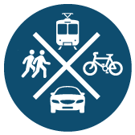

Commute Mode

Our Grade: C Only 18% of our regional population commutes by walking, biking, transit or carpooling.
Definition:This indicator measures the percentage of commuters in the region who get to work by walking, biking, transit, or carpooling.
Reason: This is an indicator of whether our transportation system gives you choices. Driving is a convenient travel mode for many trips, including your commute to work. However, the problem is when driving is the only feasible way. High-performing transportation systems provide choice and opportunities for multi-modal transportation without forcing residents to use a particular mode. We believe a 30% share of biking, walking, transit and carpooling is evidence of a robust multi-modal system.
Who's Doing It Better?: Seattle. Of Baltimore’s peer regions, Seattle offers the most choice as indicated by 24% of its commuters using alternatives to driving alone.